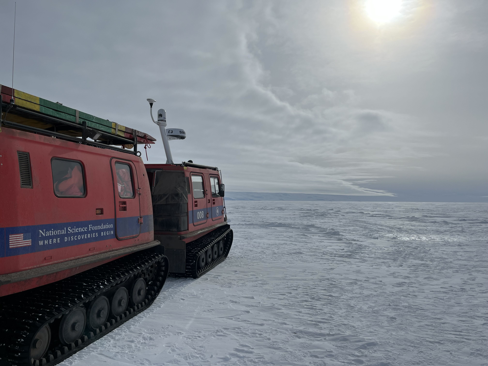

Glaciologist & PhD Student
Margot Shaya
I am a PhD student at the University of Washington. I use radar and models to study ice flow in Antarctic blue ice areas!
Research
I am broadly interested in measuring and modeling the flow of ice. For my PhD research, I am studying the dynamics of the Allan Hills, Antarctica: a blue ice area where the oldest known ice on Earth has been recovered!
I’ve been to Antarctica twice to collect ice penetrating radar and GPS data. These data can show how the ice is flowing in the present-day. And conditions today – such as the shape of radar layers or the orientation of ice crystals – can help constrain ice flow in the past. I use simple kinematic models to compare with data to learn about past and present ice flow.


Selected Projects
Tidewater Glacier Calving
Calving of icebergs from tidewater glaciers contributes significant kinetic energy, which can accelerate water velocities and increase the rate of melting.
Ice Flow at the Allan Hills
Phase-sensitive radar measurements capture the very slow ice flow of the Allan Hills blue ice area. Comparing these measurements to a kinematic model corroborates the data and provides insight into the flow.